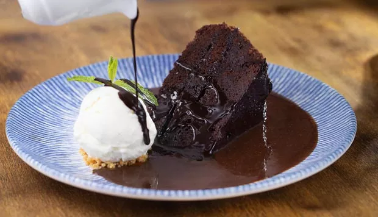

2 xícaras de açucar
3 ovos
2 xícaras de farinha de trigo
1 colher (de sopa) de fermento em pó
2 colheres (de sopa) de margarina (bem cheias)
2 xícaras de achocolatado (de preferência Nescau)1 colher (de sopa) de fermento em pó
2 xícaras de leite
1 embalagem de mistura para sorvete (Yoki)
Cobertura
1. Meia lata de leite condensado
2. 1 colher de margarina
3. Granola com passas e amêndoas para decorar
4. Meia lata de leite de caixa
5. 3 colheres de sopa de achocolatado em pó
Modo de preparo:
Tempo de preparo: 1h
- Prepare o bolo batendo a massa como de costume, primeiro a margarina com o açúcar, depois os ovos, o chocolate, o leite a farinha de trigo.
- Depois que a massa estiver bem homogênea, misture à massa delicadamente o fermento em pó e leve ao fôrno médio pré-aquecido até que asse.
- Prepare o sorvete conforme as instruções da embalagem e leve ao congelador, até que endureça.
- Para ele ganhar essa forma na hora de servir, basta encher pela metade um copo descartável de 200 ml, levar ao congelador e quando ele estiver endurecido, basta quebrar o copo cortando-o com uma tesoura e desenformar o sorvete.
- Para a calda basta levar todos os ingredientes ao fogo, mexendo sempre, até que dê uma leve engrossada.
- Sirva em um prato de sobremesa, uma pequena fatia do bolo, com 1 cubo de sorvete, na hora de servir faça a calda e sirva ainda quente salpicando granola por cima do sorvete.
